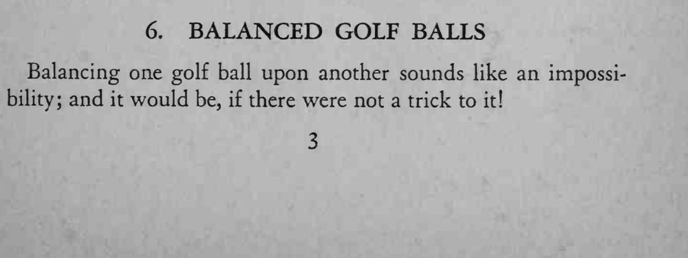
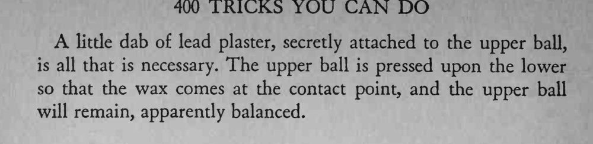

一颗滚圆的高尔夫球稳稳地立在另一颗同样滚圆的高尔夫球上面，久立不倒。
蜡只要一小点，抹多了会在球面上留下明显的痕迹。


Balancing one golf ball upon another sounds like an impossibility; and it would be, if there were not a trick to it! little dab of lead plaster, secretly attached to the upper ball, is all that is necessary. The upper ball is pressed upon the lower so that the wax comes at the contact point, and the upper ball will remain, apparently balanced.